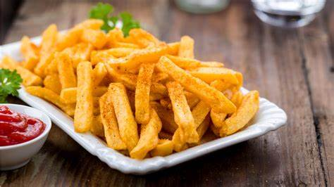
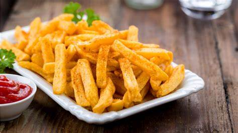

Papas fritas
Receta de papas fritas
Ingredientes
- 3 o 4 papas (300gr)
- Aceite
- Sal
Elaboración (Pasos)
- Pelar las papas
- Cortarlas en bastón
- Calentar aceite en un sartén
- Cocinar hasta que estén doradas
- Removerlas del aceite y salar al gusto
Receta de papas fritas
